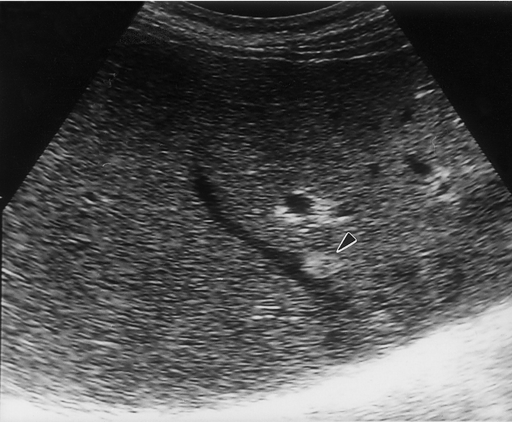
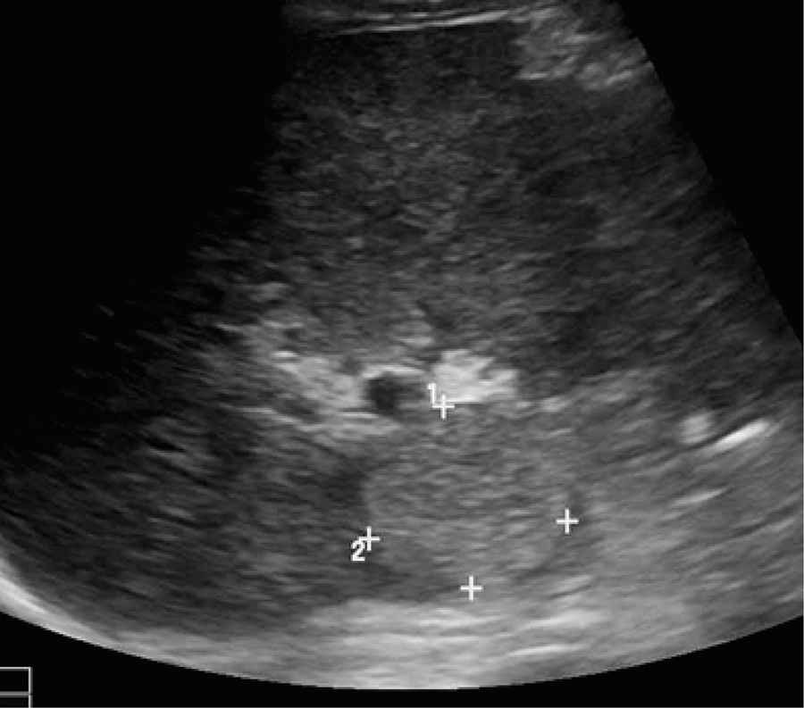
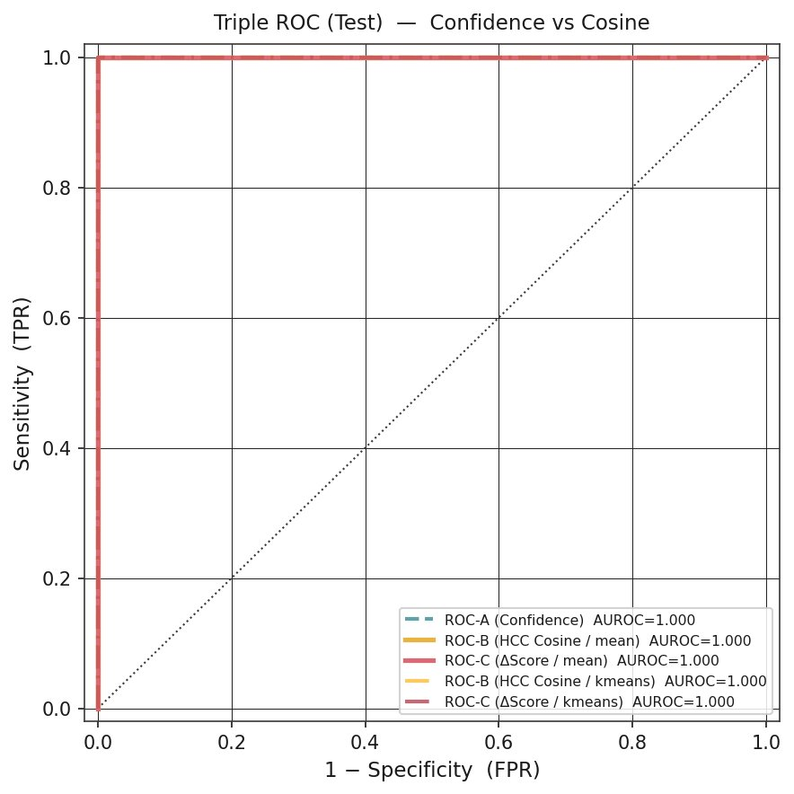
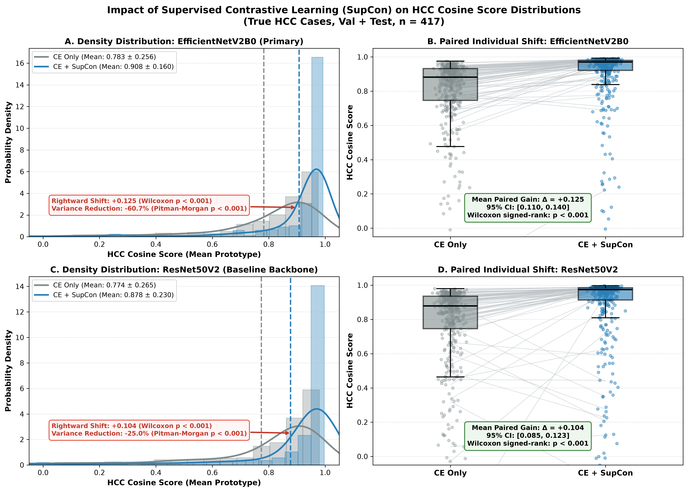
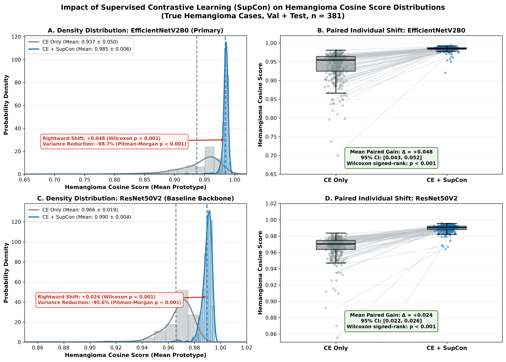
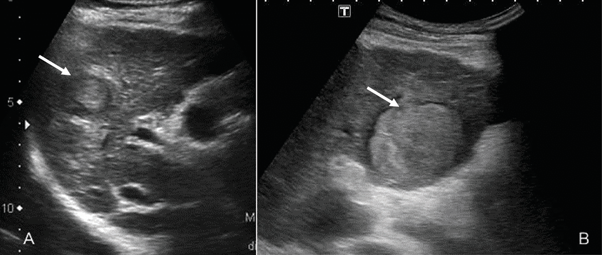
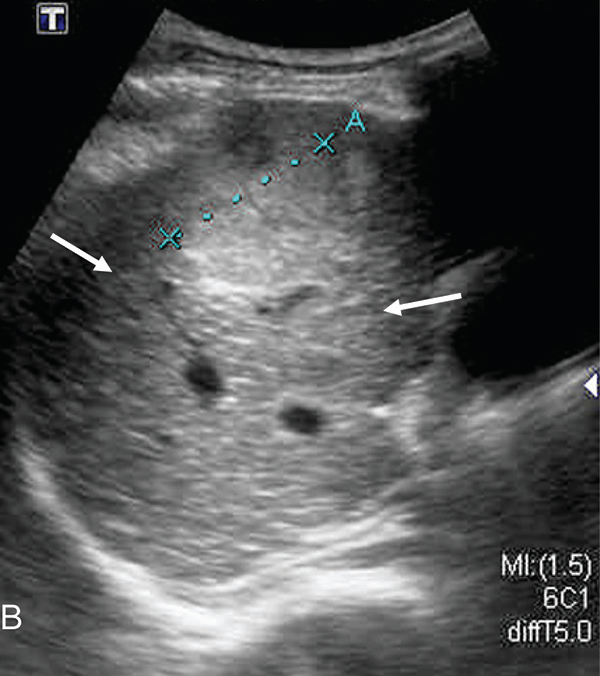
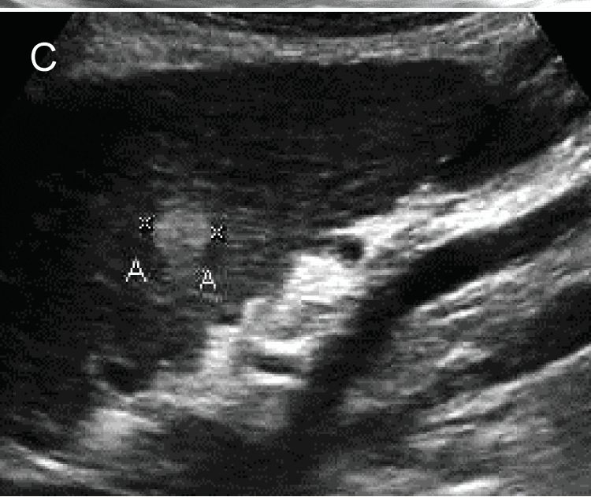

B-mode 복부 초음파 · HCC vs 간혈관종
AI가 예측한 간암,
확률을 넘어 유사도 점수까지
B-mode 초음파에서 HCC–혈관종 감별을 위한 이중 출력 지표의 탐색적 연구
대한가정의학회(KFM) 2026년도 추계학술대회 · 2026.10.24
임상 배경
What is your diagnosis?




모두 간암(HCC)이다 — 혈관종처럼 보이지만
B-mode US로 악성/양성 국소 병변 감별 — 15년 경력 초음파 판독자 236명(임상정보 제공). Yang Q, et al. EBioMedicine 2020;56:102777
근거
그 76%는 어디서 온 숫자인가
| 설계 | 중국 13개 병원 · 전향적 다기관(NCT03871140) · 병리확진 국소 간병변, >1.0 cm |
|---|---|
| 대상 | 2,143명 · 24,343장 — 학습 1,500 / 내부검증 375 / 외부검증 338 병변(3,718장) |
| 판독자 과제 | 초음파 전문의 236명(각 >15년) · 익명 동영상 10–20초 판독 · 조직학 blinded · 임상정보 제공 |
같은 연구의 AI(Model LBC)는 정확도 84.7% · 민감도 86.5% · 특이도 85.5% (AUC 0.924) — 조영증강 CT 84.7% · MRI 87.9%.
→ B-mode 단일 과제에서 AI는 판단에 도움이 된다(CT와 동등). 다만 영상만 쓴 모델(LB)은 76.0%로 판독자와 동일 — 이득은 임상정보에서 왔다.
Yang Q, et al. EBioMedicine 2020;56:102777 · 악성 80.7% : 양성 19.3% 불균형
방법
확률 하나가 아니라,
“전형 소견과 얼마나 닮았는가”
대부분의 AI는 confidence 하나로 label을 유추한다 — 그래서 세 개를 낸다.
Confidence — 결정 강도
HCC cosine — 전형 HCC와의 닮음(typicality)
Δscore — 어느 쪽에 더 가까운가
744명 · 2,656장 (Train 1,858 / Val 530 / Test 268) · 환자 단위 분할
방법
인코더 내부 — 필터가 훑고, CLS가 패치를 본다
EfficientNetV2B0 7.1M — ResNet50V2(23.6M)와 같은 AUROC를 더 가벼운 모델로
방법
SupCon은 분류 성능이 아니라
임베딩의 모양을 바꾼다
미학습 HCC 417예 중 94.7% 점수 상승 · 분산 −60.7% (paired Wilcoxon·Pitman-Morgan p<0.001)
결과
같은 모델, 두 운영점 —
민감도와 특이도가 맞바뀐다
| Test n=268 | 확률 ≥ 0.5 | 닮음 (Youden) |
|---|---|---|
| 민감도 | 95.7 % | 100 % |
| 특이도 | 100 % | 99.2 % |
| 정확도 | 97.8 % | 99.6 % |
| TP·FP·FN·TN | 134 / 0 / 6 / 128 | 140 / 1 / 0 / 127 |
닮음 지표 = HCC cosine ≥ −0.0048 · Δscore ≥ −0.958 (검증 세트 Youden, 탐색적).
세 출력의 AUROC 는 모두 1.000 — 우열은 판정할 수 없다.

결과
닮음 점수가 실제로 움직였다

true HCC (n=417)

true 혈관종 (n=381)
HCC cosine 0.882 → 0.970 · 분산 −60.7%
혈관종 cosine 0.955 → 0.985 · 분산 −98.7%
Δscore 1.508 → 1.076 (감소)
전형에서 멀던 증례가 전형 쪽으로 — HCC cosine 하위 10% 0.49 → 0.76, 최솟값 −0.47 → −0.005, 낮을수록 상승폭 큼 (r=−0.80).
단 상승은 SupCon 목적함수의 귀결 — 임상 타당성의 독립 증거가 아니다 · ResNet50V2에서 재현 (+0.104)
결과
혈관종처럼 보이는 HCC — 4예 모두 HCC로 분류

① 고에코 HCC · Fig 4

② halo 동반 · Fig 10

③ 후방강화 동반 · Fig 11B

④ 혈관종과 나란히 · Fig 12C
Confidence 4/4 (0.989–1.000)
HCC cosine 4/4 (0.849–0.989)
Δscore 4/4 (0.651–1.221)
Proof-of-Concept demonstration (n=4) — 민감도 추정치로 읽을 수는 없다 · J Med Assoc Thai 2013;96(7):829-838
고찰 ①
차이는 유의하지 않다 —
다만 실패하는 지점이 다르다
| 틀린 케이스 | 확률 0.5 | 닮음 지표 | 그 케이스의 닮음 점수 |
|---|---|---|---|
| HCC 6장 | 혈관종 (위음성) | HCC | cosine 0.26 – 0.55 |
| 혈관종 1장 | 혈관종 (정답) | HCC (위양성) | cosine +0.0325 · Δ −0.888 |
실패하는 케이스가 서로 다르다 — 불일치 6 대 1, McNemar p = 0.125. 개선도 비열등도 주장하지 않고, 컷오프는 외부 코호트에서 재산출한다.
고찰 ②
Novelty와 한계
Novelty
- 한 모델에서 확률과 닮음 판단을 케이스 단위로 함께 낸다
- 판독자의 “전형 소견과의 비교”를 숫자로 — SupCon이 cosine을 전형 쪽으로 정렬 (분산 −60.7 %)
- 지표마다 Youden 운영점과 등가 구간을 제시한다
한계
- 단일기관 · 외부 검증 없음
- 컷오프는 이 코호트 값 — 이전 불가
- 차이 유의하지 않음(p=0.125) — 우월·비열등 판정 불가
- AUROC 1.000 — 최적 컷오프가 유일하지 않음
- Δscore 감소 · 닮음 상승은 목적함수의 귀결
- 배경 층화 불가 · shortcut 배제 불가
다음 단계 — 다기관 외부 검증에서 컷오프 재산출 · 판독자 대상 전향적 비교 · AFP 및 조영증강 영상과의 비교.
Thank you
감사합니다
질문과 토론을 환영합니다.
대한가정의학회(KFM) 2026년도 추계학술대회 · 2026.10.24
Try it now
지금 이 자리에서 직접 추론해 볼 수 있습니다
설치·로그인 없이 QR → 브라우저에서 실행. 사진은 기기 밖으로 나가지 않습니다.
https://kimhs950627.github.io/hcc-vs-hemangioma/web-demo/